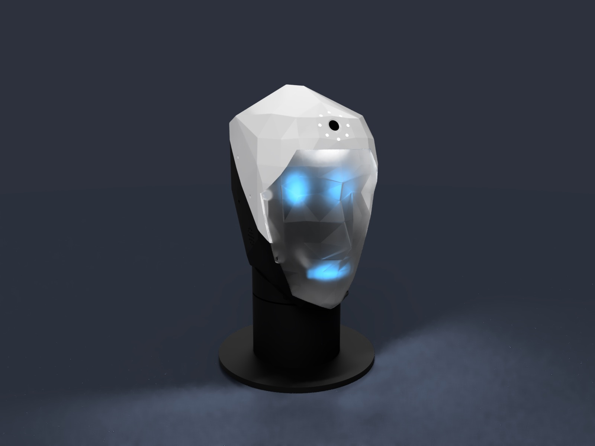
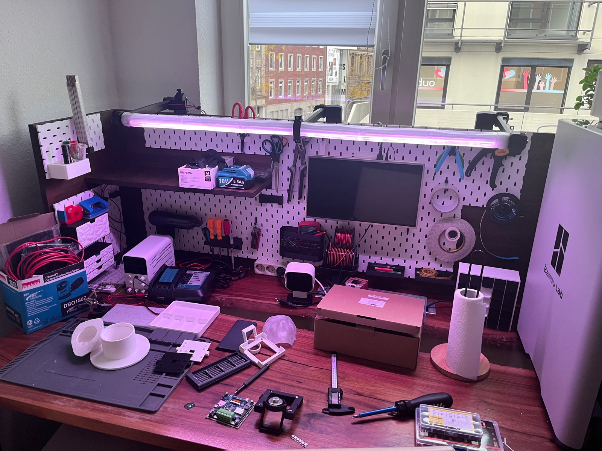
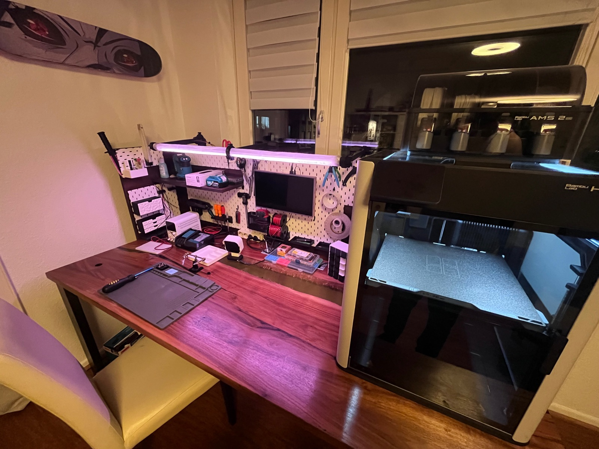
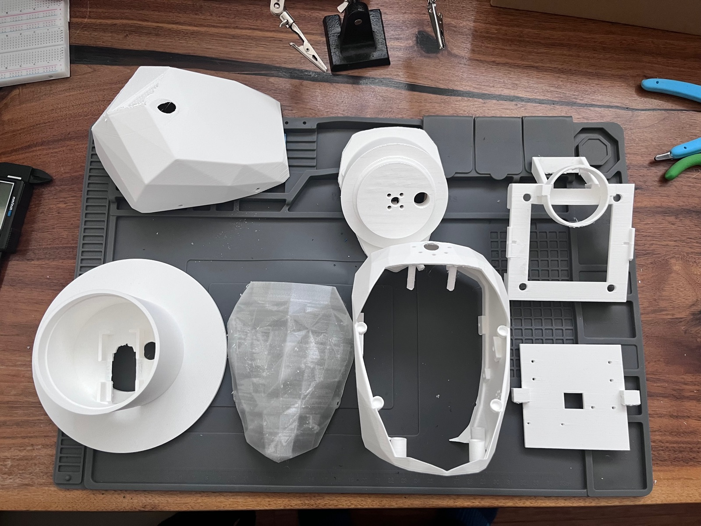
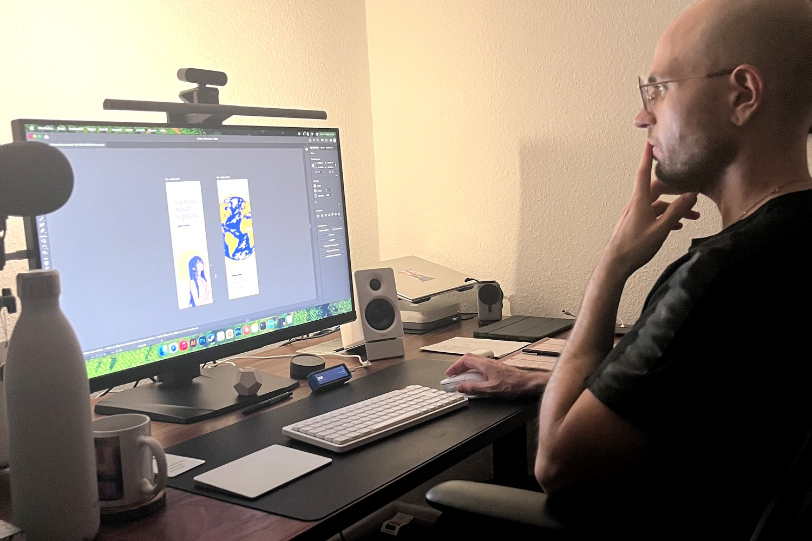
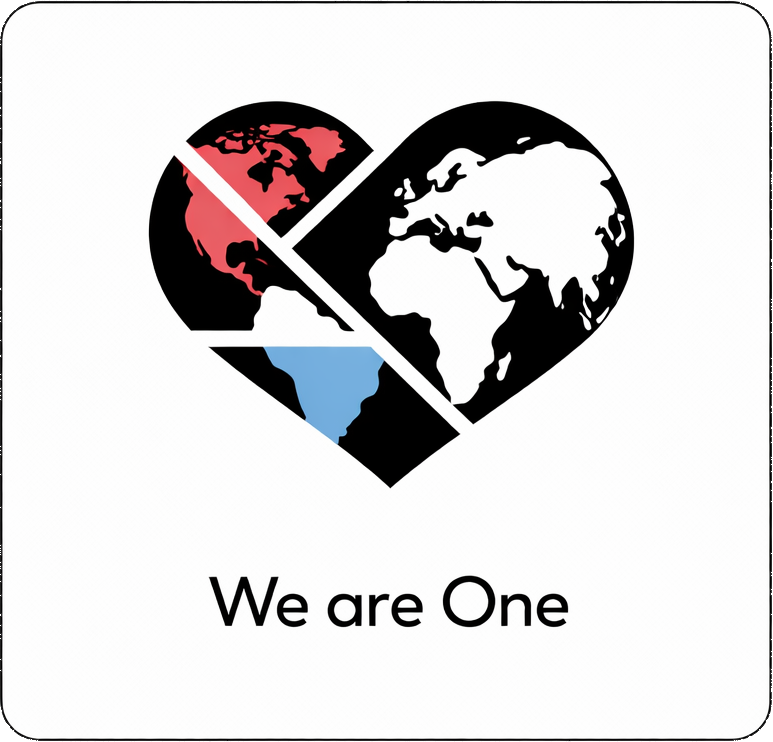

OneHumanity Robotics
One Planet,
One Humanity
Robotics from Aachen. We develop robots and machines that accompany people – from the first concept to a working prototype. Step by step and openly documented.
- Robotics
- Aachen, Germany
- Concept & prototypes

How we work
One step at a time.
Big machines are built from small, finished steps. Every project here runs through the same three stages – and a stage only counts as done when it works and is written down.
-
01
Concept
What should the machine do, how should it behave, where are its limits? Purpose, character and safety rules are set before anything is built.
-
02
Prototype
Design, print, solder, program, test – in our own workshop in Aachen. Each module gets its own electronics and is tested on its own.
-
03
Finish
A step is finished when it runs and is documented. Only then does the next one begin. That is how the LifeBar became a device in daily use.
What we stand for
- Open Files, firmware and guides are published wherever possible.
- Local No account, no cloud – perception and data stay on the device.
- Human Built for people, not for metrics. Robots that are honest about being robots.
Projects
What we are building.
From the robot to the drone to the device on the desk – each project shows honestly where it stands today and what comes next.
The workshop
Where the prototypes are made.
3D printing, electronics, soldering station and CAD – everything a first prototype needs is in one room in Aachen. Ideas turn into parts you can hold here.



Small things from the workshop
What comes off the printer along the way – free to rebuild or ready-made from the shop.

Who is behind it
Hi, I’m Marcello.
Founder of OneHumanity Robotics. For now I work alone: I write the concepts, design the parts and build the first prototypes myself. Software developer by profession, trained craftsman by origin – I like to work thoroughly, one step at a time.
Take part
Follow the build.
Videos of the projects, open files for your own workbench, and free stickers for good places.
Walkthroughs and progress on the robot, the drone and everything else on the bench.
Files & firmware on GitHubCode, CAD, circuit boards and build guides. Print models are on MakerWorld.
Request a free sticker setLimited free sets. We cover printing and shipping – it may take a few weeks.
Download & print yourselfUse the sticker freely. Print it, share it, place it somewhere kind.
Visit the shopStickers, bookmarks and finished pieces on Etsy. Every purchase goes into the next prototype.
